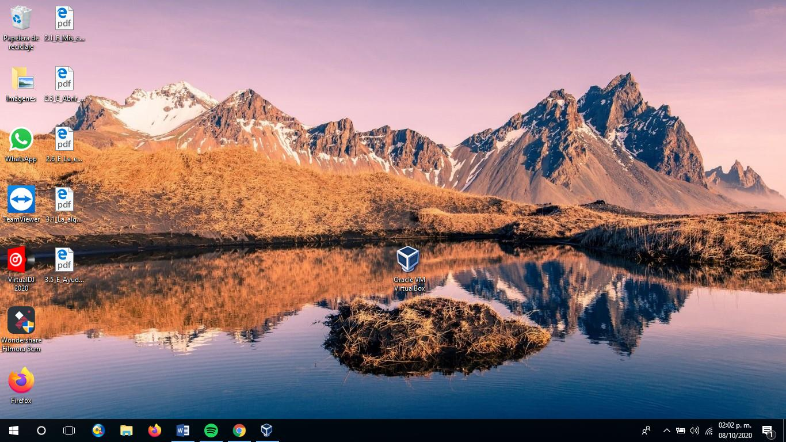

VIRTUAL BOX
VirtualBox es una aplicación que sirve para hacer máquinas virtuales con instalaciones de sistemas operativos.
Este software permite instalar sistemas operativos adicionales, conocidos como sistemas invitados, dentro de otro sistema operativo anfitrión, cada uno con su entorno independiente.


Para poder crear máquinas virtuales con VirtualBox que emulen uno o varios sistemas operativos se necesitan una serie de requisitos:
Un procesador x86 razonablemente potente. Cualquier procesador AMD o Intel reciente puede valer.
Dependiendo del sistema operativo que se pretenda emular se necesitará mas o menos memoria RAM. Para hacer un cálculo aproximado se necesitan al menos 512 MB para el sistema operativo anfitrión mas la cantidad que necesite el sistema operativo a instalar. Se puede instalar disponiendo de menos memoria aunque en este caso el rendimiento se verá disminuido.
El espacio en disco que ocupa VirtualBox es pequeño, por ejemplo, la versión para Windows ocupa alrededor de 45 MB, aunque los sistemas operativos a emular pueden requerir bastante espacio en disco, del orden de GB.
¿Cómo instalar Virtual Box?
Como primer paso nos vamos a la página oficial de virtual box;
Posteriromente abriremos la descarga y abriremos el cuadrito de Virtual Box.
Daremos click en "siguiente" en todos los cuadros que nos salgan con esta opción
Se podra eliminar el primer archivo que es el que esta arriba.
Abriremos el primer enlace

Y finalmente quedará instalado Virtual Box y se podra abrir sin ningún problema.